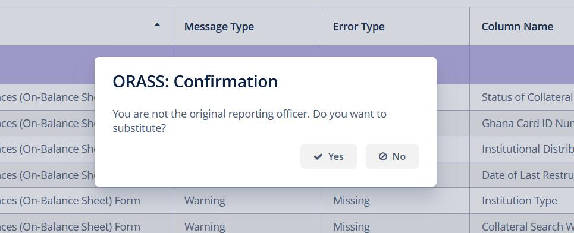
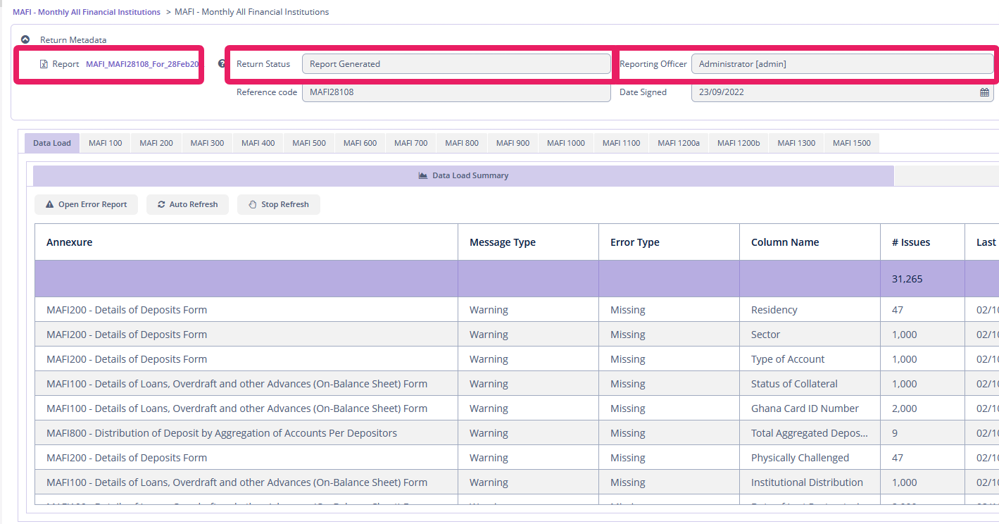
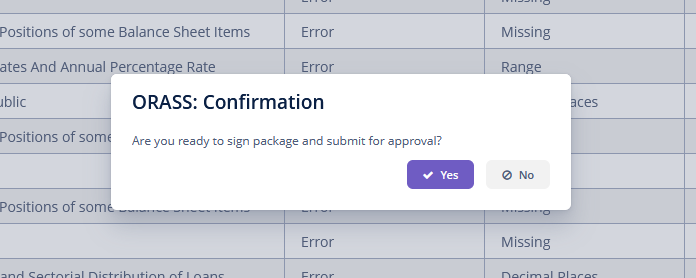
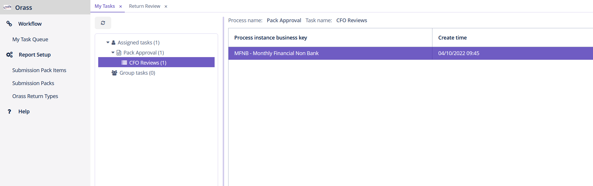
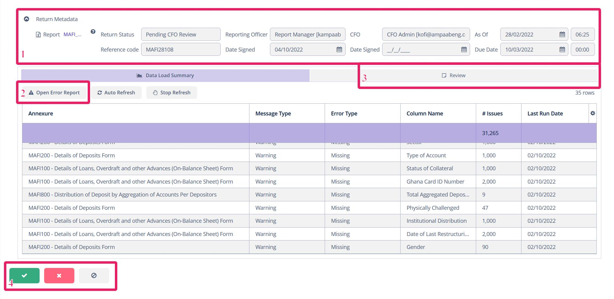

Workflow
This section explains how the workflow works. All returns must be approved before going to BoG.
Go to Workflow Playlist section below for video tutorials (a playlist) on how to use the Excenit RSS workflow.
Introduction
After generating the report, it is now time to submit for review. By default, a user with the Report Approver role is assigned to the return. If there are multiple users with the Report Approver role, one is selected at random. The Report Approver corresponds to the CFO/Representative section of the attestation form (AF100) of each return. Returns can be re-assigned to other approvers if the default one is unavailable. Contact the Administrator to re-assign returns.
Submit for Approval
You can only submit a return whose status is Report Generated. Only users with the Report Manager role can prepare and submit a return for review.
-
To submit a return for approval, open the return in edit mode.
-
If you are not the original
Report Managerwho prepared this return, the system will prompt you to switch ownership. After switching ownership, close and re-open the return.  -
Ensure that in the
Metadatasection, theReporting Officerfield has your name. In addition, the report name should be visible next to theReportfield. If any of these conditions are violated, please contact your Administrator or regenerate the return.  -
In the
Action Barclick button to submit for approval. -
Confirm that you want to submit for approval. Confirmation means you are signing the attestation form (
AF100) that is attached to the BoG template for this return.  After confirmation,AF100in the return will be populated with the name of the reporting officer and the current date. The selected CFO will be notified by email and the status of the return will change toPending CFO Review.
Review Return
If a return is ready for review, the assigned CFO will receive an email after the Report Manager submits it. If the return was submitted but email wasn’t received, please contact the Administrator who will re-assign the return to expected approver.
To review a return:
-
Log in as a user with
Report Approverrole. By default, the users withReport Approverroles can not edit any other parts of the system. -
Go to Workflow→ My Task Queue → Pack Approval → CFO Reviews. The number of pending returns will be in parentheses. In the screenshot below, there is one pending return to be reviewed. 
-
Open it from the right pane by double-clicking. This screen is similar to the one used by the
Report Managerto prepare the return, but the content cannot be edited by theReport Approver. There are four important sections of this screen.-
Metadata - Here you will find the report file (in Excel), the status of the return (
Pending CFO Review), theReporting Officer, theCFO, theAs Ofdate, and the date theReporting Officersigned the return. Ensure that all these fields have the correct values. If not, please contact the Administrator or theReport Managerto review and correct. -
Error Report - Click this link to open the detailed validation summary attached to this return.
-
Review - Use this space to send a message to the
Report Managerwho prepared this return. -
Action Bar - Contains the buttons to
approve,rejectthe return or close this window without any action.
-
-
In the
Metadatasection, click the report file to download and review.

Reject a Return
After reviewing a return, you can approve or reject. To reject a return, go to the Review tab and provide feedback that will go back to the Report Manager. After that, click the Reject button in the Action Bar.
The system will ask you to confirm rejection, after which the Report Manager will be notified via email and the status of the return will change to CFO Rejected.
Review a Rejected Return
If a return is rejected, the Report Manager who prepared the return will receive a notification via email. The status of the return will change to CFO Rejected. You can only make changes to such a return before resubmitting.
Approve and Submit a Return
If the return has no issues, you can instead approve it.After approval, it will be submitted to BoG.
Once you approve a return, it will be submitted to BoG, typically within five minutes. The only way to stop a return from going to BoG is if the Administrator stops the process within the allotted time.
Re-assign Returns
Sometimes it may be necessary to re-assign the approval of a return to someone else. Only the Administrator can do this.
To re-assign a return:
-
Log in as a user with administrative privileges.
-
Go to Workflow→User Tasks. This will open the screen below.
-
Go to the
Filterbox to select the parameters, including the process. -
Click
Apply. The list of processes that have been submitted for approval and meet the criteria above will be displayed. -
Select the task you want to re-assign.
-
Click the
Reassign taskbutton, which will open theTask reassignmentwindow. -
Select the new assignee and click
OK. -
The new assignee can now log in and the task will be available under Workflow→ My Task Queue.